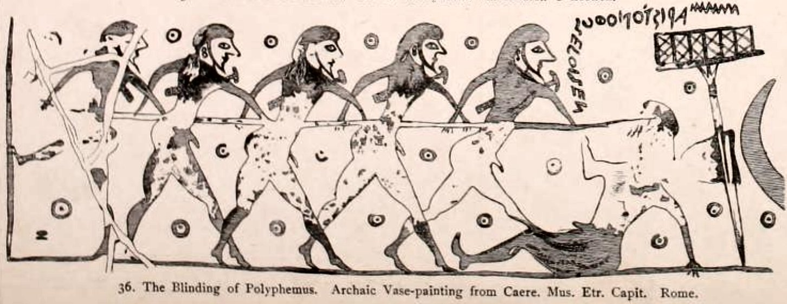
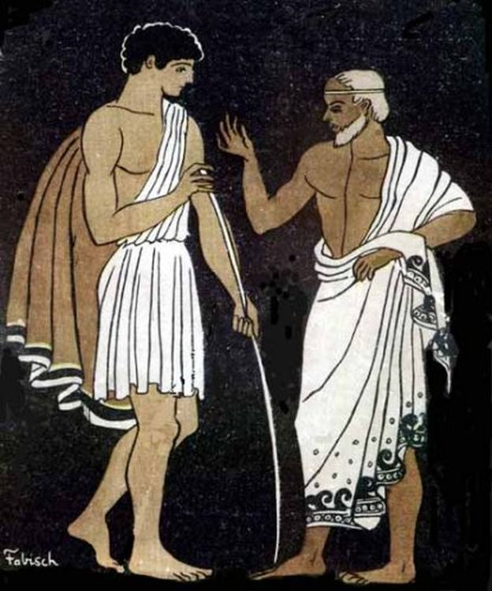
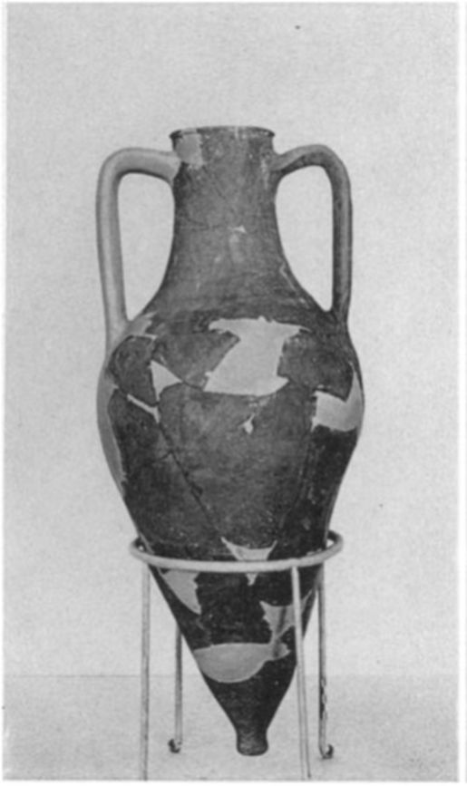
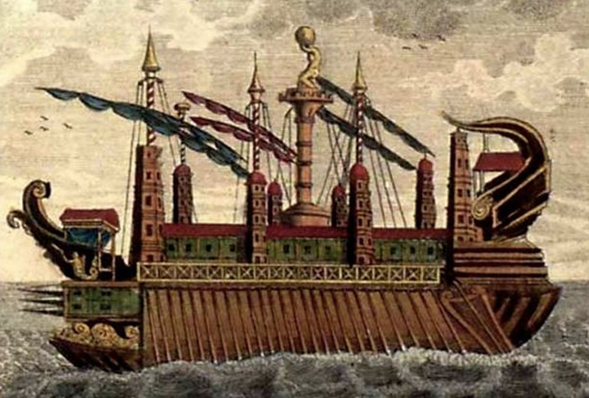
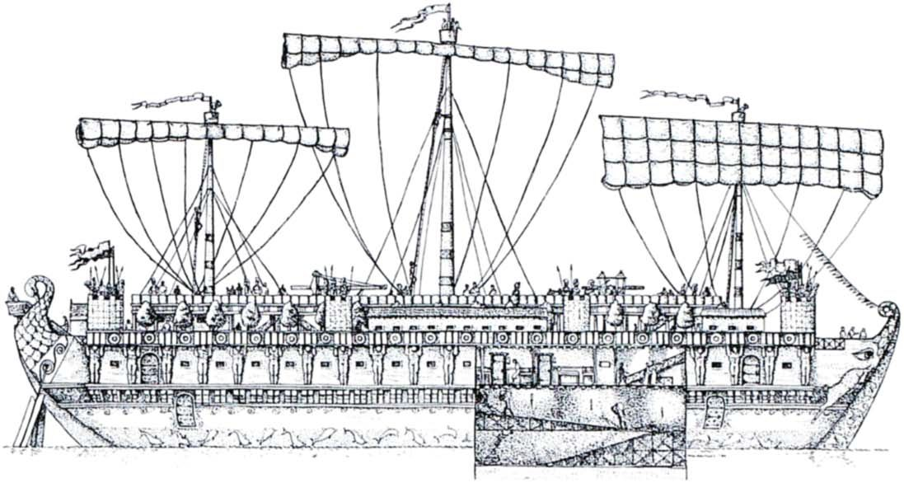
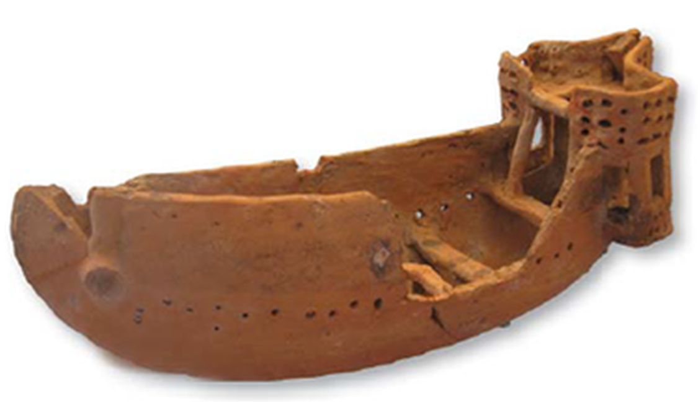

Вернемся к тому вопросу, который все время маячит на горизонте наших рассуждений об античных кораблях: когда возникли первые названия для различных типов военных кораблей и торговых судов в Древней Греции и на каких принципах они строились?
Нас может удивить, что при всем обилии материала по морской теме на заре греческой истории до нас дошло очень мало терминов, которые можно считать названием конкретного типа корабля. И практически все они, за малым исключением, связаны с числом весел на корабле. Числа двадцать, тридцать, пятьдесят были базовыми в этой классификации. Но базовыми – не означает частыми. В ранней греческой поэзии, а именно из нее мы черпаем наши сведения в этой области, встречается всего по одному термину, обозначающему двадцативесельный (эйкосорос) и пятидесятивесельный (пентеконторос) корабли.
Эйкосорос (εἰκόσορος; в поэтической форме ἐεικόσορος) мы встречаем только один раз в гомеровской поэзии: с мачтой этого корабля Гомер сравнивает дубину Полифема, которую Одиссей со своими спутниками, заострив, используют в качестве кола для ослепления великана-циклопа. Этот сюжет мы уже встречали на вазе Аристонота (см. предыдущий пост).

Гомер пишет:
νηὸς ἐεικοσόροιο μελαίνης,
φορτίδος εὐρείης, ἥ τ᾽ ἐκπεράᾳ μέγα λαῖτμα:
Od.9. 322-23
Эти две строки так часто цитируются в сочинениях по морской истории, что уместно привести несколько их поэтических переводов на русский язык (с контекстом).
Первый сделан Василием Андреевичем Жуковским:
В козьей закуте стояла дубина циклопова, свежий
Ствол им обрубленной маслины дикой; его он, очистив,
Сохнуть поставил в закуту, чтоб после гулять с ним; подобен
Нам показался он мачте, какая на многовесельном,
С грузом товаров моря обтекающем судне бывает;
Был он, конечно, как мачта длиной, толщиною и весом.
Далее следует перевод В.А.Вересаева
Подле закуты лежала большая дубина циклопа -
Свежий оливковый ствол: ее он срубил и оставил
Сохнуть, чтоб с нею ходить. Она показалась нам схожей
С мачтою на корабле чернобоком двадцативесельном,
Груз развозящем торговый по бездне великого моря.
Вот какой толщины и длины была та дубина.
П. А. Шуйский ( Свердловск, 1948) в своем переводе описывает эту дубину (кол) более приземленным языком: она была
похожей на мачту
Черных судов грузовых, двадцативесельных, широких,
Плававших всюду по морю пучинному, нам он казался
Видом своим, толщиною такой же, длиною такой же.
Смысл термина эйкосорос сомнений не вызывает: первая его часть – это греческое числительное эйкоси (εἴκοσι, перед гласными - εἴκοσιν, эйкосин) – двадцать, у которого отброшено окончание и(н), а вторая – ор(ос) практически всеми переводится как весла, т.е. весь термин означает снабженный двадцатью веслами, двадцативесельный. Правда, есть здесь небольшая заковыка. На нее обратил внимание ученик цюрихского лингвиста Эрнста Риша (Ernst Risch) Кристоф Курт, автор обстоятельного исследования-диссертации Seemannische Fachausdrucke bei Homer («Морские термины у Гомера», Гёттинген, 1979). Он считает, что от слова «грести» (ἐρέσσω), «гребец» (ἐρέτης) происходит форма –εροσ (-ерос), которая входит в состав слова πεντηκόντερος (пентекóнтерос, пятидесятивесельный корабль), которое появляется у Геродота и в дальнейшем в эпиграфических надписях. От этой формы, якобы, путем ассимиляции появилась форма –ορος-, которая стала второй частью слов эйкосорос, триаконторос, пентеконторос и других подобных. Однако исторически первой засвидетельствована форма πεντηκόντορος – пентеконторос, «пятидесятивесельный», что соответствует упомянутому нами ранее отрывку из Пиндара и ряду более поздних источников. Форма πεντηκόντερος пентекóнтерос появилась позже, а в случае эйкосороса так и вовсе не встречается, поэтому не могла стать источником предыдущей формы. Так что пасьянс не складывается и вся конструкция повисает в воздухе. (Нам эту задачу не решить, не по Сеньке шапка. Оставим ее лингвистам.)
Эйкóсорос – самый старый термин, определяющий тип судна, который встречается в греческой литературе.
Если придерживаться сложившейся традиции передачи греческих и латинских имен на русский язык, то следовало бы писать эйкóсор; но в отдельных случаях, вопреки законам русской грамматики, имена сохраняют греческие и латинские флексии: ος, ον, us, um, is. Например, географические имена с греческими окончаниями: Делос (Δῆλος), Самос (Σάμος), Родос (Ῥόδος), Лесбос (Λέσβος), Илион (Ἴλιον), Амфиполис (Ἀμφίπολις), Мегалополис (Μεγαλόπολις) и т.д. (М. Протасов). Форма эйкóсорос в русской литературе практически не встречается, обычно (хотя и не часто) используется форма эйкосор. Род этого существительного еще не установился: украинские писатели-фантасты Дмитрий Громов и Олег Ладыженский, которые пишут под псевдонимом Генри Лайон Олди и отрывок из сочинения которых помещен в эпиграфе, считают, что у него женский род («… На торговой эйкосоре доплыли до Скироса, там купили лодку.», «…- Эй! Жениться едете?! - крикнули нам с проходящей мимо эйкосоры.» и т.п.). А другой литератор, Александр Палинур в романе «Кассандра» полагает, что эйкосор – мужского рода:
«Вероятнее всего, Парис плыл на двадцативесельном корабле, называемом эйкосор. По крайней мере, подобный корабль изображен на одной афинской вазе, причем картинка эта весьма напоминает сцену похищения Парисом Елены: на борт корабля собираются взойти мужчина и женщина, что являлось редчайшим случаем в те суеверные времена.
Эйкосор считался купеческим кораблем с круглой кормой и широким, для увеличения емкости трюма, днищем. Обычно в него загружали в качестве балласта камни и песок, а затем постепенно заменяли балласт товаром.
Осталось только добавить, что строить такой корабль помогала Парису сама Афродита.»
Примеров использования терминов эйкосор, эйкосорос в русской литературе еще очень мало, чтобы делать на их основе какие-либо выводы.
Как было уже отмечено, сам термин эйкосорос у Гомера встречается только один раз, соответствующая цитата помещена выше. Хотя в описательной форме поэт упоминает двадцативесельные корабли неоднократно. Они используются в качестве посыльного судна, как в случае, когда Хрисеида была отправлена своему отцу:
Сын же Атрея на море спустил быстроходное судно,
Двадцать выбрал гребцов, погрузил на него гекатомбу,
Дар Аполлону, и сам прекрасную Хрисову дочерь
Взвел на корабль. А начальником встал Одиссей многоумный.
Гомер, Илиада,1.309. Пер. В.А.Вересаев
Здесь тип корабля описывается численностью его гребцов: ἐν δ᾽ ἐρέτας ἔκρινεν ἐείκοσιν – «двадцать выбрал гребцов».
На корабле с двадцатью гребцами (νῆ᾽ ἄρσας ἐρέτῃσιν ἐείκοσιν), Телемах отправляется на поиски своего отца Одиссея, уехавшего на Троянскую войну. Богиня Афина, принявшая образ старого друга Одиссея Ментора, советует ему:
Лучший корабль с двадцатью снарядивши гребцами, отправься
И об отце поразведай исчезнувшем;
Гомер, Одиссея,1.309. Пер. В.А.Вересаев

Телемах и Ментор. Иллюстрация Pablo E. Fabisch, к книге François Fénelon «Aventuras de Telémaco» (1699)
И на быстром корабле с двадцатью гребцами (νῆα θοὴν καὶ εἴκοσ᾽ ἑταίρους) женихи Пенелопы планируют устроить засаду, чтобы погубить Телемаха:
Дайте же быстрый корабль мне и двадцать товарищей в помощь,
Чтобы, когда возвращаться он будет, устроить засаду
И подстеречь его между Итакой и Замом, в проливе.
Гомер, Одиссея,4.669 Пер. В.А.Вересаев
А термин для такого корабля у Гомера мы видим только один раз. И там мы читаем четкое определение этого типа корабля: φορτίδος εὐρείης – широкое грузовое судно с двадцатью веслами. Оно отличается от военных кораблей большей шириной корпуса и меньшим количеством весел. Но здесь не стоит попадать в лингвистическую ловушку, буквально трактуя это название. Меньшее количество весел вовсе не означает меньший по размерам корабль. История последующего использования термина эйкосорос применительно к типам кораблей дает нам подтверждение этого тезиса. Термин применялся к различным мореходным парусным кораблям, вне зависимости от их размеров. Рассмотрим несколько примеров.
У Демосфена в речи против Лакрита по делу о о договоре займа, обеспеченном залогом судна, мы читаем:
τὰ δὲ τρισχίλια κεράμια ἄγεσθαι ταῦτα εἰς τὸν Πόντον ἐν τῇ εἰκοσόρῳ ἣν Ὑβλήσιος ἐναυκλήρει.
Demosthenis.Orationes. ed. W. Rennie
Речь была написана ок. 351 г. до н.э. Вместе с контекстом перевод цитируемого отрывка на русский язык выглядит так:
(18) Прежде всего в договоре сказано, что они взяли у нас ссуду в тридцать мин под три тысячи амфор вина, как если бы залог оценивался еще в тридцать мин, так что стоимость вина, включая издержки, необходимо возникающие при его хранении, возросла бы до одного таланта серебром. А эти три тысячи амфор они обязаны были везти в Понт на двадцативесельном корабле, принадлежавшем Гиблесию.
(пер Л.M. Глускиной)
Посмотрим, что представлял собой «двадцативесельный корабль», который брал в качестве груза три тысячи амфор вина.
Современные историки располагают документами (в частности, регламентирующими деятельность портовых властей), из которых следует, что в третьем веке до н.э. грузовые суда грузоподъемностью ниже 3000 талантов (ок. 80 тонн) считались малыми, а суда, грузоподъемность которых находилась в промежутке мажду этой величиной и 5000 талантов (ок.130 тонн) – считались средними по размерам. Грузоподъемность больших купеческих судов достигала 350-500 тонн (Л.Кассон). Наиболее распространеннами были суда грузоподъемностью ок. 120 тонн.
Вместимость одной амфоры на островах Тасос, Родос и в Книдской колонии в то время составляла соответственно 21, 28 и около 40 литров.

Амфора с острова Тасос. Начало 3 века до н.э. Емкость ок. 20 литров.
Т.е. вес вина в 3000 таких амфор, грубо, был 20×3000=60 тонн. 20-литровая амфора весила 17-18 кг, т.е. необходимо добавить к весу груза еще 51-54 тонны.
Таким образом, общий вес груза был немного более 110 тонн.
А теперь посмотрим на водоизмещение пентеконтора, корабля с пятьюдесятью веслами. По работам Гомера историки оценивают его в 12 тонн. («With crew and a supply of food and water aboard it would displace about 12 tonnes.»)
С течением времени эти цифры, конечно, менялись. Но основная мысль приведенного рассуждения ясна – двадцативесельнй эйкосорос был значительно крупнее пятидесятивесельного пентеконтороса.
Может показаться удивительным, но самый большой торговый корабль античности, Сиракузия, за постройкой которого наблюдал сам знаменитый Архимед, также назывался эйкосоросом:

Изображение 1798 года
41. δὲ ἡ ναῦς τῇ μὲν κατασκευῇ εἰκόσορος, τριπάροδος δέ: τὴν μὲν κατωτάτω ἔχων ἐπὶ τὸν γόμον, ἐφ᾽ ἣν διὰ κλιμάκων πυκνῶν ἡ κατάβασις ἐγίνετο: ἡ δ᾽ ἑτέρα τοῖς εἰς τὰς διαίτας βουλομένοις εἰσιέναι ἐμεμηχάνητο: μεθ᾽ ἣν ἡ τελευταία τοῖς ἐν τοῖς ὅπλοις τεταγμένοις
Ath. 5.41
41. Это было судно с двадцатью скамьями для гребцов и с тремя проходами один под другим. Самый нижний проход, к которому нужно было с спускаться по множеству крепких лестниц, вел к трюму, второй был сделан для тех, кто хотел пройти в каюты, и, наконец, последний предназначался для вооруженных воинов.
Афиней. ПИР МУДРЕЦОВ. В 15 книгах. Книга V. Гл.41
И хотя Торр (Ancient Ships, 1895, стр.28-29) скептически оценивает приведенное Афинеем описание Сиракузии, а его грузоподъемность (2,400 тонн зерна, 250 тонн рыбы, 500 тонн шерсти и 500 тонн других грузов, таким образом, всего 3,650 тонн) считает явно завышенной, целый ряд других исследователей не видят оснований для такого скепсиса.

Сиракузия. Рис. N. Holmes Kantzios
Мы видим, таким образом, что во всех приведенных сочинениях термин эйкосорос используется для обозначения корабля в смысле, использованном Гомером: φορτις εύρηίη – «широкий грузовой корабль», а буквальное значение термина -«двадцативесельный» - остается за скобками.
И все же все попытки реконструкции эйкосороса оязательно предусматривают наличие двадцати весел и более широкий, по сравнению с пентеконторосом, корпус. Поскольку весла на эйкосоросе играли вспомогательную роль, отдавая первенство парусам, не было необходимости плотного размещения гребцов друг относительно друга и занимаемое ими пространство могло превышать норматив для гребных судов того времени (ок. 1 м на одного гребца) Таким образом, длина эйкосороса по ватерлинии в эпоху Гомера могла составлять 15 м, а общая длина – 17м. Отношение длины к ширине – 5:1 – дает наибольшую ширину ок. 3 м, что означает значительно меньшую по сравнению с пентеконтором скорость. Грузовместимость такого корабля составляла 12× 2×1 м3, что позволяло брать до 15 тонн груза.
Модель корабля VI века до н.э. из обожженной глины, найденная в Аматусе близ Ларнаки на Кипре вполне соответстует характеристикам эйкосороса.

Комбинация весельных портов и округлые формы корпуса вполне соответствует конструкции парусно-гребного судна античного периода. Конечно, как мы видели, с течением времени внешний вид эйкосороса менялся, менялись и основные его характеристики.
Рассказ продолжим в следующий раз.